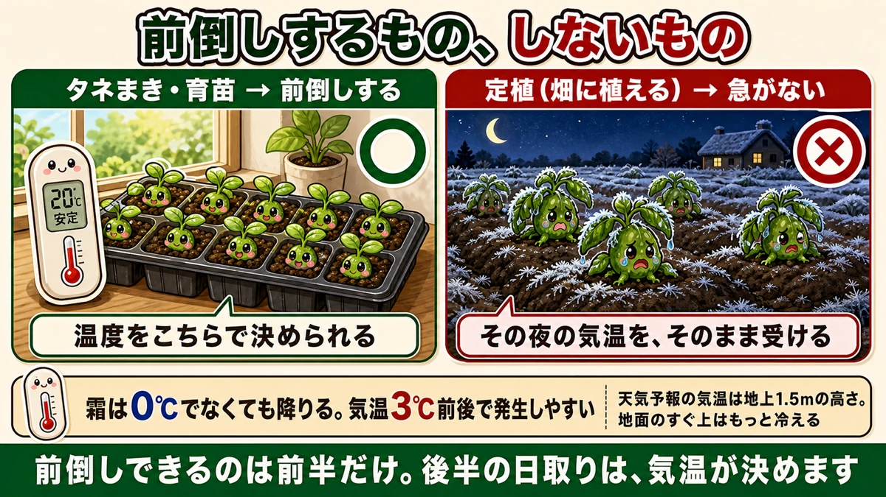
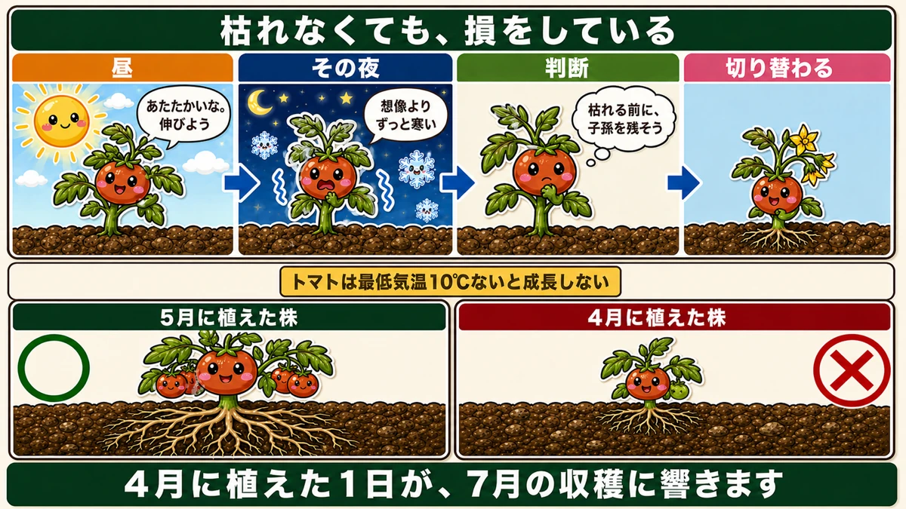
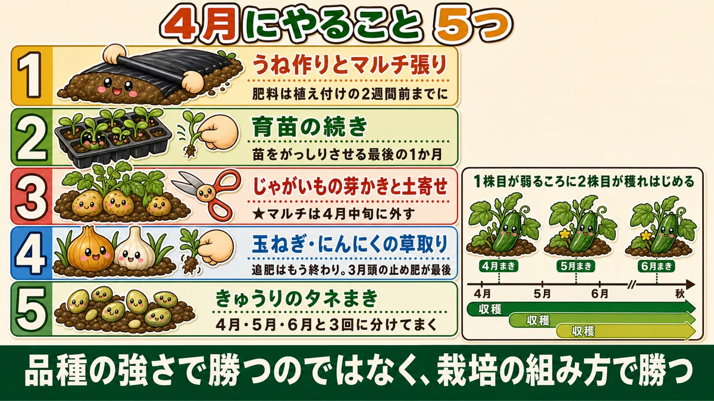

【4月にまく・植える野菜】夏野菜の苗は、まだ買わないでください🌱
🗨️「暖かくなったし、そろそろ夏野菜だ」
🗨️「お店に苗が並んでるから、もう植えていいはず」
🗨️「去年、植えたあとに枯れてしまった」
どうも、8150（えいこう）です🌱 家庭菜園歴8年、理科の教員免許を持っていて、有機・無農薬で野菜を育てています。
毎月の「今月まく・植える野菜」、4月号です。
そして今回は、前回と逆のことを言います。
先に、この記事でいちばん言いたいことを言っておきます。
★夏野菜の苗は、4月にはまだ買わないでください。
前回、「夏野菜は前倒しの時代」と書きました。あれは本当です。でも★前倒しするのはタネまきのほうで、畑に植えるのは急いではいけません☺️

📖 この記事の目次
前倒しするもの、しないもの
育苗と定植は、別のもの
矛盾しているように聞こえますよね。順に整理します。
★タネまき・育苗 … 前倒しする
- 場所は室内や簡易温室
- ★温度をこちらが決められる
- 冷えたら取り込める
★定植（畑に植える） … 急がない
- 場所は外
- ★遅霜と、夜の低温にさらされる
- 一度植えたら動かせない
違いは★「温度を自分で決められるかどうか」です。
室内なら、寒い日は取り込めます。畑に植えてしまったら、その夜の気温をそのまま受けるしかありません。
だから3月は種まき、5月が植え付け
流れにするとこうなります。
- 2月末〜3月 … タネをまく（室内）
- 3月〜4月 … 苗を育てる（簡易温室）
- ★5月・ゴールデンウィーク前後 … 畑に植える
前倒しできるのは前半だけ。★後半の日取りは、気温が決めます。
①4月に植えると、枯れます
★霜は、0℃でなくても降りる
4月に植えていちばん多い失敗が、遅霜です。
ここで大事な数字があります。
★霜は、気温3℃前後で発生しやすいんです。
0℃を下回ったら霜、と思っている方が多いのですが、違います。天気予報が「最低気温3℃」と言っている日でも、畑には霜が降ります。
理由は、★天気予報の気温は地上から1.5mほどの高さで測っているからです。地面のすぐ上は、それより冷えます。晴れて風のない夜は、地表の熱が空へ逃げていく。だから畑は予報より寒い。
トンネルをしても、やられるときはやられる
私が読んだ農家さんの話で、印象に残っているものがあります。
★ビニールトンネルをかけて、さらに不織布も敷いていたのに、ズッキーニの苗が枯れた。
二重にしてもだめだった、という話です。4月の寒さは、それくらい侮れません。
「花冷え」「寒の戻り」という言葉があります。桜が咲くころに急に冷える。昔から名前が付いているということは、★毎年起きるということです。
②★もっとこわいのは、枯れないほうです
根が浅くなる
枯れれば、失敗したと分かります。植え直せます。
こわいのは、★枯れずに生き残ったけれど、根が浅くなっている場合です。見た目は普通に育っているので、気づきません。
なぜそうなるのか。ここが面白いところです。
★野菜は、最低気温を見ている
野菜が見ているのは、最高気温ではありません。
★トマトは、最低気温が10℃ないと成長しません。
ナス、ピーマンなどのナス科も、だいたい同じです。昼に25℃まで上がっても、夜が8℃なら、トマトは動けません。
そして★4月は、九州以外のほとんどの地域で、最低気温が10℃を下回ります。九州でも、山のほうは下回ります。
苗の気持ちで考えてみる
4月の午前中に植えられた、トマトの苗になったつもりで考えてみてください。

★昼
「あたたかいな。よし、伸びよう」
★その夜
「寒い。想像よりずっと寒い。時期を間違えたかもしれない」
★次の判断
「このままだと枯れるかもしれない。★枯れる前に、子孫を残しておこう」
★結果
花芽をつけはじめます。
★花に切り替わると、根が止まる
植物の成長には、2つのモードがあります。
- ★栄養成長 … 根・茎・葉を大きくする
- ★生殖成長 … 花を咲かせ、実をつけ、タネを残す
寒さで「危ない」と判断した苗は、★栄養成長から生殖成長へ切り替えます。
そうすると、根を伸ばす作業が止まります。まだ体ができていないのに、子孫づくりを始めてしまう。
★根が浅い株は、吸える水も養分も少ない。だから夏になって本気で実をつける時期に、力が足りません。収穫量が減ります。
★4月に植えた1日が、7月の収穫に響く。これが「見えない失敗」です。
★じゃあ、なぜ店には並んでいるのか
悪意はありません
ここは、多くの方が引っかかるところだと思います。
「植えちゃいけないなら、なぜ4月から売っているの？」
答えは単純で、★早く植えたい人の需要に応えているだけです。
- トンネルをかけて温度を管理できる人
- ハウスを持っている農家さん
- 去年うまくいったから今年も早めに、という経験者
そういう方には、4月の苗は必要です。★売ること自体は間違っていません。
危ないのは「売っているから大丈夫」
問題は、★はじめて野菜を育てる方が「店に並んでいるのだから、今が植えどきなのだろう」と受け取ってしまうことです。
これはとても自然な受け取り方です。私も最初の年、まったく同じことを考えました。
そして枯らして、「野菜づくりは難しい」と思ってやめてしまう。★いちばんもったいないのが、これです。
良心的なお店もあります
「4月には夏野菜の苗は売りません」と張り紙を出しているお店もあるそうです。
★4月はまだ寒いので、植えても失敗するリスクが高い。5月になったら買いに来てください、と。
もし近所にそういうお店があったら、大事にしてください。
どうしても4月に植えたいなら
道具で守る
事情があって早く植えたい場合は、方法があります。
- ★ホットキャップ … 育苗用の透明な帽子。1株ずつ、ぽんとかぶせる
- ★ビニールトンネル … うね全体を覆う。4月に植えるなら必須
- ★肥料の袋をかぶせる … 現場の工夫です。底を切って、上からかぶせる
トンネルを張るほど広くない、という方にはホットキャップが向いています。
最速ラインは「4月中旬＋トンネル」
これらを使ったうえで、★4月中旬が最速です。
そして、★手間をかけたくないなら5月から。これで何も問題ありません。
★1〜2週間の遅れは、根がしっかり張るぶんで、あとから追い越します。急がば回れが、そのまま当てはまります。
4月にやること、5つ

1位：★うね作りとマルチ張り
いちばん大事なのがこれです。
5月に植えるための場所を、4月のうちに作っておきます。
- うねを立てる
- ★肥料を入れるなら、植え付けの2週間前までに
- 黒マルチを張って、地温を上げておく
★肥料を入れてすぐ植えてはいけません。有機の肥料は分解に時間がかかり、その2〜3週間は土の中で熱やガスが出ます。ここに根を入れると傷みます。
先に済ませておけば、5月は「植えるだけ」になります。
2位：育苗の続き
2月末にまいた苗が育っています。
- 混んできたら間引く
- ★株間を浅く耕して土を寄せる（中耕）
- 本葉3〜4枚でポットへ移す
- ★水やりは必ず朝
このあたりは前にくわしくお話ししました。★4月は「苗をがっしりさせる最後の1か月」です。
3位：じゃがいもの芽かきと土寄せ
2月に植えたじゃがいもが伸びています。
- 芽は★2〜3本に絞る
- ハサミは★株ごとに除菌する
- ★4月中旬にマルチを外す
とくに最後がこの月の要です。★黒マルチの下は気温より5〜10℃高くなります。じゃがいもの適温は20〜25℃なので、4月中旬にはもう暑すぎます。
4位：玉ねぎ・にんにくの草取り
★追肥はもう終わりです。3月頭の止め肥が最後でした。
4月にやるのは草取りだけです。玉ねぎは根が浅いので、草に場所を取られると負けます。マルチを張っていても、植え穴から生えてきます。
手で1本ずつ抜いてください。道具で削ると、玉ねぎの根まで切ります。
5位：★きゅうりのタネまき
最後は、私がおすすめしたい作り方です。
★きゅうりは、4月・5月・6月と3回に分けてまいてください。
そうすると、★秋まで収穫が続きます。
なぜ3回に分けるのか
きゅうりは、育つのが早いかわりに、株の寿命が短い野菜です。夏の後半になると、うどんこ病が出て弱ってきます。
1回しか植えていないと、そこで終わりです。
でも★3回に分けてまいておくと、1株目が弱ってきたころに2株目が穫れはじめます。★バトンタッチできるんです。
すると、うどんこ病に悩む時間そのものがなくなります。
★品種の強さで勝つのではなく、栽培の組み方で勝つ。これは無農薬でとても有効な考え方です。前に、とうもろこしを3月に植えて虫の時期をずらす話をしました。あれと同じ発想です。
4月は「準備の月」
この記事の要点
- ★夏野菜の苗は、4月にはまだ買わない
- 前倒しするのは★タネまき・育苗。★定植は急がない
- 違いは★温度を自分で決められるかどうか
- ★霜は0℃でなくても降りる。気温3℃前後で発生しやすい
- 天気予報の気温は★地上1.5mの高さ。地面のすぐ上はもっと冷える
- ★トンネル＋不織布の二重でも枯れることがある
- ★こわいのは枯れないほう。★根が浅くなって、その後ずっと響く
- ★トマトは最低気温が10℃ないと成長しない
- 4月は★九州以外のほとんどの地域で最低気温が10℃を下回る
- 寒さで「危ない」と判断した苗は★生殖成長に切り替えて花芽をつける → 根が止まる
- ★店に並ぶのは、早く植えたい人の需要に応えているだけ。悪意はない
- 危ないのは★「売っているから大丈夫」と受け取ること
- 早く植えるなら★ホットキャップ／トンネル／肥料袋。最速は★4月中旬＋トンネル
- ★適期は5月・ゴールデンウィーク前後
- 4月にやること＝★うね作りとマルチ／育苗の続き／★じゃがいもの芽かきと土寄せ／草取り／きゅうりのタネまき
- ★肥料は植え付けの2週間前までに入れる
- ★マルチは4月中旬に外す
- ★きゅうりは4月・5月・6月と3回に分けてまくと秋まで穫れる
- ★品種の強さではなく、栽培の組み方で勝つ
全部やろうとしなくて大丈夫です。まずはカレンダーの5月の連休に「夏野菜を植える」と書いて、4月は場所づくりに使ってください。それだけで、今年の夏が変わります🌱
次回は、その植え付けの話。苗をどう選んで、どう植えると、根が早く張るのかをお話しします🍅
ここまで読んでくださって、ありがとうございました。
簡易温室
4月に苗を買ってしまったときの逃げ場になります。夜だけ入れて、朝出す。これができるなら前倒しも可能です。
![[商品価格に関しましては、リンクが作成された時点と現時点で情報が変更されている場合がございます。]](https://hbb.afl.rakuten.co.jp/hgb/56e737da.59472026.56e737db.311c7b4f/?me_id=1280948&item_id=10022268&pc=https%3A%2F%2Fthumbnail.image.rakuten.co.jp%2F%400_mall%2Fweiwei%2Fcabinet%2Fshouhin-image03%2Faah004-r.jpg%3F_ex%3D240x240&s=240x240&t=picttext "[商品価格に関しましては、リンクが作成された時点と現時点で情報が変更されている場合がございます。]")

トンネルビニール
遅霜と北風から守ります。連休までは、いつ冷え込んでもおかしくありません。
![[商品価格に関しましては、リンクが作成された時点と現時点で情報が変更されている場合がございます。]](https://hbb.afl.rakuten.co.jp/hgb/56bc237a.e97551b1.56bc237b.2513ed10/?me_id=1310260&item_id=10001120&pc=https%3A%2F%2Fthumbnail.image.rakuten.co.jp%2F%400_mall%2Fdiokasei%2Fcabinet%2F010maruti-bini-ru%2Fbini-ruopri%2F413190.jpg%3F_ex%3D240x240&s=240x240&t=picttext "[商品価格に関しましては、リンクが作成された時点と現時点で情報が変更されている場合がございます。]")
穴あきマルチ
4月のうちに張って、地温を上げておきます。土が温まっていないところに植えるのが、いちばんよくない。
![[商品価格に関しましては、リンクが作成された時点と現時点で情報が変更されている場合がございます。]](https://hbb.afl.rakuten.co.jp/hgb/55521906.a3595d78.55521907.92994d18/?me_id=1225177&item_id=10035007&pc=https%3A%2F%2Fthumbnail.image.rakuten.co.jp%2F%400_mall%2Fssn%2Fcabinet%2F02584092%2F07223762%2F4980356008386_1.jpg%3F_ex%3D240x240&s=240x240&t=picttext "[商品価格に関しましては、リンクが作成された時点と現時点で情報が変更されている場合がございます。]")
牛ふん堆肥
植える2週間前に入れておくもの。4月は準備の月なので、ここが本番です。
![[商品価格に関しましては、リンクが作成された時点と現時点で情報が変更されている場合がございます。]](https://hbb.afl.rakuten.co.jp/hgb/55e75fe5.20db4cd1.55e75fe7.d1ec32cc/?me_id=1194164&item_id=10000517&pc=https%3A%2F%2Fthumbnail.image.rakuten.co.jp%2F%400_mall%2Fgardening%2Fcabinet%2Fhiryousennyouhiryo%2Fdsc_2803.jpg%3F_ex%3D240x240&s=240x240&t=picttext "[商品価格に関しましては、リンクが作成された時点と現時点で情報が変更されている場合がございます。]")